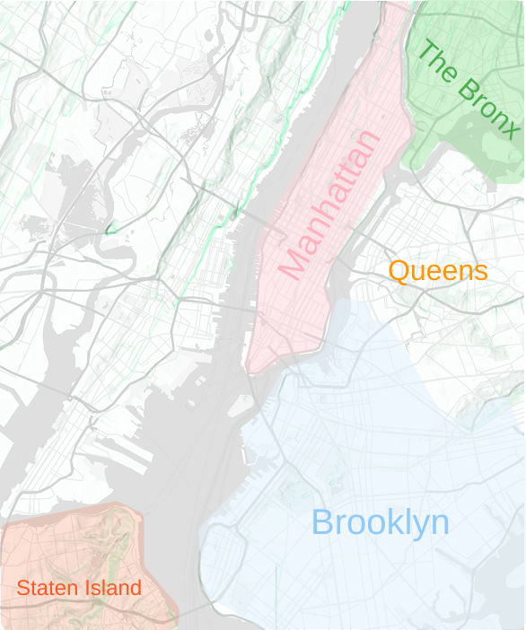

Selected: none
Beyond Garden is an interactive page for kids ages 8–12 to explore real parks across New York City. Users click a borough button to discover public green spaces beyond their own neighborhood. The page pulls real park data from NYC Open Data and shows a short list of parks, including each park’s name, address, and size. This helps kids compare places across the city and understand that nature exists in many forms—small playgrounds, large parks, and everything in between. Beyond Garden connects digital interaction with real-world places kids can visit and care about.
Selected: none